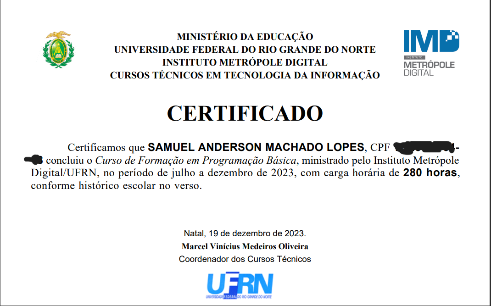
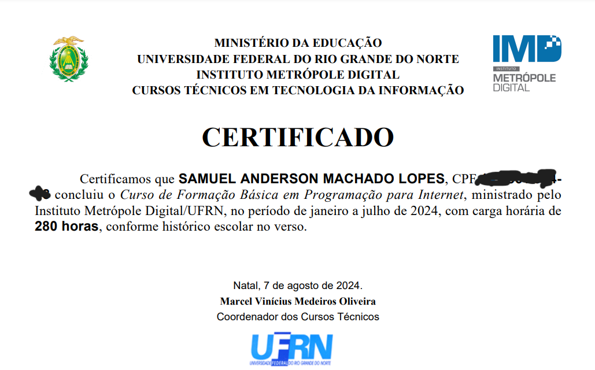

IMD
Instituto Metrópole Digital - (IMD)
Basic module
This course provided an understanding of programming and internet concepts, along with lessons on the English language and Google Workspace.

IMD
Instituto Metrópole Digital - (IMD)
Intermediate module
In this module I was able to improve my skills in front-end and back-end programming, learning about many types of data and web implementations.

IMD
Instituto Metrópole Digital - (IMD)
IOT intrudcition
In this workshop I learned concepts of programming with Arduino and circuit automation along with their prototyping.